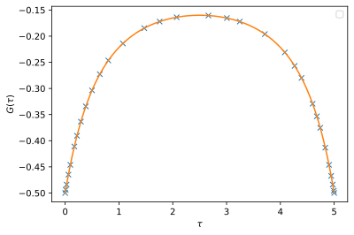

Step-by-step guide
Step 1 - Impurity many-body Hamiltonian
First we have to construct the local many-body Hamiltonian (H_loc) of the Anderson impurity model we want to solve.
Examples
For the single band Hubbard model the interaction is density-density only and can be constructed using the Triqs second-quantization operators found in
triqs.operators.*.
[2]:
from triqs.operators import n
U = 2.0
mu = U / 2 # Chemical potential for half-filling
N_tot = n('up', 0) + n('do', 0) # Total density operator
H_loc = U * n('up',0) * n('do', 0) - mu * N_tot
print(H_loc)
-1*c_dag('do',0)*c('do',0) + -1*c_dag('up',0)*c('up',0) + 2*c_dag('do',0)*c_dag('up',0)*c('up',0)*c('do',0)
For multi-orbital models one often use the Kanamori interaction which can be built using tools in
triqs.operators.util.*as follows.
[3]:
norb = 3
spin_names = ['up', 'do']
U = 4.6
J = 0.8
from triqs.operators.util.U_matrix import U_matrix_kanamori
KanMat1, KanMat2 = U_matrix_kanamori(norb, U, J)
from triqs.operators.util.hamiltonians import h_int_kanamori
H_int_3 = h_int_kanamori(spin_names, norb, KanMat1, KanMat2, J, off_diag=True)
from itertools import product
N_tot_3 = sum([ n(spin, idx) for spin, idx in product(spin_names, range(norb)) ])
mu = 0.5*(5*U - 10*J)
H_loc_3 = H_int_3 - mu * N_tot_3
print(H_loc_3)
-7.5*c_dag('do',0)*c('do',0) + -7.5*c_dag('do',1)*c('do',1) + -7.5*c_dag('do',2)*c('do',2) + -7.5*c_dag('up',0)*c('up',0) + -7.5*c_dag('up',1)*c('up',1) + -7.5*c_dag('up',2)*c('up',2) + 2.2*c_dag('do',0)*c_dag('do',1)*c('do',1)*c('do',0) + 2.2*c_dag('do',0)*c_dag('do',2)*c('do',2)*c('do',0) + 0.8*c_dag('do',0)*c_dag('up',0)*c('up',2)*c('do',2) + 0.8*c_dag('do',0)*c_dag('up',0)*c('up',1)*c('do',1) + 4.6*c_dag('do',0)*c_dag('up',0)*c('up',0)*c('do',0) + 3*c_dag('do',0)*c_dag('up',1)*c('up',1)*c('do',0) + 0.8*c_dag('do',0)*c_dag('up',1)*c('up',0)*c('do',1) + 3*c_dag('do',0)*c_dag('up',2)*c('up',2)*c('do',0) + 0.8*c_dag('do',0)*c_dag('up',2)*c('up',0)*c('do',2) + 2.2*c_dag('do',1)*c_dag('do',2)*c('do',2)*c('do',1) + 0.8*c_dag('do',1)*c_dag('up',0)*c('up',1)*c('do',0) + 3*c_dag('do',1)*c_dag('up',0)*c('up',0)*c('do',1) + 0.8*c_dag('do',1)*c_dag('up',1)*c('up',2)*c('do',2) + 4.6*c_dag('do',1)*c_dag('up',1)*c('up',1)*c('do',1) + 0.8*c_dag('do',1)*c_dag('up',1)*c('up',0)*c('do',0) + 3*c_dag('do',1)*c_dag('up',2)*c('up',2)*c('do',1) + 0.8*c_dag('do',1)*c_dag('up',2)*c('up',1)*c('do',2) + 0.8*c_dag('do',2)*c_dag('up',0)*c('up',2)*c('do',0) + 3*c_dag('do',2)*c_dag('up',0)*c('up',0)*c('do',2) + 0.8*c_dag('do',2)*c_dag('up',1)*c('up',2)*c('do',1) + 3*c_dag('do',2)*c_dag('up',1)*c('up',1)*c('do',2) + 4.6*c_dag('do',2)*c_dag('up',2)*c('up',2)*c('do',2) + 0.8*c_dag('do',2)*c_dag('up',2)*c('up',1)*c('do',1) + 0.8*c_dag('do',2)*c_dag('up',2)*c('up',0)*c('do',0) + 2.2*c_dag('up',0)*c_dag('up',1)*c('up',1)*c('up',0) + 2.2*c_dag('up',0)*c_dag('up',2)*c('up',2)*c('up',0) + 2.2*c_dag('up',1)*c_dag('up',2)*c('up',2)*c('up',1)
Step 2 - Spawn solver instance
The second step in using xca is to instantiate an instance of the triqs_xca.BlockSparseSolver class.
[4]:
from triqs_xca import BlockSparseSolver as Solver
norb = 1
S = Solver(
H_loc=H_loc,
beta=5.0,
w_max=50.0,
eps=1e-8,
gf_struct=[('up', norb), ('do', norb)],
)
Starting run with 1 MPI rank(s) at : 2026-05-19 12:22:22.535403
____ ____________ _____
\ \/ /\_ ___ \ / _ \
\ / / \ \/ / /_\ \
/ \ \ \____/ | \
/___/\ \ \______ /\____|__ /
\_/ \/ \/ [github.com/TRIQS/xca]
beta = 5.0, w_max = 50.0, eps = 1e-08, N_DLR = 32
AtomDiagReal: dim 4 with 4 subspaces dims [1] freq [4] E min/max +0.00E+00/+1.00E+00
The solver constructor takes the input
H_loc: Impurity local Hamiltonianbeta: Inverse temperaturew_max: DLR frequency cut-off (the spectrum of the model must be in the range[-w_max, +w_max]eps: Accuracy of Discrete Lehmann Representation (DLR) used for imaginary time response functionsgf_struct: Green’s function structure 1st index: name, 2nd index: dimension of subspace
Using atomic symmetries
The solver takes the optional parameter conserved_operators which defaults to 'automatic'. This will automatically use the full set of state permutation symmetries that block diagonalizes the local Hamiltonian H_loc.
Note: for multiorbital systems it can be faster to use only a subset of symmetries, like total density, by setting conserved_operators=[N_tot], where N_tot is the total density operator (using Triqs 2nd quantization operators), i.e. N_tot = sum([n('up', oidx) + n('do', oidx) for oidx in range(norb)]). (To disable the use of symmetries simply pass conserved_operators=[].)
Step 3 - Hybridization function
To fully specify the Anderson impurity model we also have to supply the hybridization function \(\Delta(\tau)\) that describes the retarded fluctuation of electrons to the environment. The solver instance S sets up the hybridization function container available as S.Delta_tau and we need to explicitly set its value.
Examples
Here is a simple example with a Hybridization function \(\Delta(\tau)\) comprised of a single discrete pole/state.
[5]:
from triqs.gf import make_gf_dlr_imtime, make_gf_dlr_imfreq
from triqs.gf import inverse, iOmega_n
for bidx, delta_tau in S.Delta_tau:
delta_w = make_gf_dlr_imfreq(delta_tau)
delta_w << inverse(iOmega_n - 1.0)
delta_tau[:] = make_gf_dlr_imtime(delta_w)
Another common test case is a spin- and orbital-diagonal hybridzation function with a semi-circular density of states.
[6]:
from triqs.gf import make_gf_dlr_imtime, make_gf_dlr_imfreq, SemiCircular
for bidx, delta_tau in S.Delta_tau:
delta_w = make_gf_dlr_imfreq(delta_tau)
delta_w << SemiCircular(2.0)
delta_tau[:] = make_gf_dlr_imtime(delta_w)
Step 4 - Self-consistent solution
Combining the hybridization function S.Delta_tau and the local many-body Hamiltonian H_loc the Anderson impurity model is fully specified and we can call the S.solve(...) method to obtain the pseudo-particle self-consistent solution using all self-energy diagrams up to and including the expansion order max_order.
[7]:
S.solve(max_order=2, tol=1e-4, verbose=True)
AAA: Error 1.87E-01 using 1 support and 30 fitting points (step 1/31)
AAA: Error 6.16E-04 using 2 support and 28 fitting points (step 2/31)
AAA: Error 2.40E-07 using 3 support and 26 fitting points (step 3/31)
AAA: Converged after 3 steps with error 2.40E-07.
TDC: Error 7.49E-07 for 3 AAA steps (Error 6.16E-04 no opt) c.f. tol 1.00E-05.
AAA: Error 1.87E-01 using 1 support and 30 fitting points (step 1/1)
TDC: Error 2.70E-01 for 1 AAA steps (Error 7.34E-01 no opt) c.f. tol 1.00E-05.
AAA: Error 1.87E-01 using 1 support and 30 fitting points (step 1/2)
AAA: Error 6.16E-04 using 2 support and 28 fitting points (step 2/2)
TDC: Error 1.58E-03 for 2 AAA steps (Error 1.87E-01 no opt) c.f. tol 1.00E-05.
TDC: Compression finished with 3 AAA steps and error 7.49E-07.
Adapol: Fit error = 7.49E-07 < tol_adapol = 1.00E-05, N_poles = 5
iter = 1, diff_G = 1.79E-01, Z-1 = -1.65E-10, eta = 5.14E-01
iter = 2, diff_G = 1.25E-01, Z-1 = -9.58E-11, eta = 6.81E-01
iter = 3, diff_G = 3.70E-02, Z-1 = -2.49E-11, eta = 7.23E-01
iter = 4, diff_G = 7.26E-03, Z-1 = -4.60E-12, eta = 7.31E-01
iter = 5, diff_G = 9.59E-04, Z-1 = -5.60E-13, eta = 7.32E-01
iter = 6, diff_G = 8.61E-05, Z-1 = -4.75E-14, eta = 7.32E-01
Converged after 6 iterations with diff_G = 8.61E-05 < tol = 1.00E-04
Timing: incl. excl.
----------------------------------------------------
Adapol hybridization fit: 0.008 0.008 3.3% ||
AtomDiag Init: 0.000 0.000 0.0% |
DiagramEvaluator Init: 0.004 0.004 1.5% ||
Dyson: 0.054 0.001 0.4% |
Setup: 0.023 0.023 8.9% |---|
Solve: 0.030 0.030 11.5% |----|
Sigma: 0.135 0.000 0.1% |
Order 1: 0.004 0.004 1.6% ||
Order 2: 0.130 0.130 50.4% |-------------------|
Single-particle Gf: 0.012 0.000 0.0% |
Order 1: 0.000 0.000 0.1% |
Order 2: 0.011 0.011 4.4% |-|
Other: 0.046 0.046 17.8% |------|
----------------------------------------------------
Total: 0.259 100.0%
Hybridization compression
For max_order > 1 the solver will by default try to compress the hybridization function using Adapol to a minimal set of poles. The fit tolerance hyb_tol defaults to 0.1*tol but can be passed as an optional argument to the solve(...) function.
It is also possible to turn off the compression entirely by passing hyb_comp=False which will cause the solver to use the (larger) DLR pole representation, i.e.
[8]:
S.solve(max_order=2, tol=1e-4, verbose=True, hyb_comp=False)
Hybridization: using DLR expansion with N_poles = 32
iter = 1, diff_G = 1.06E-04, Z-1 = -2.53E-14, eta = 7.32E-01
iter = 2, diff_G = 1.03E-05, Z-1 = +1.40E-14, eta = 7.32E-01
Converged after 2 iterations with diff_G = 1.03E-05 < tol = 1.00E-04
Timing: incl. excl.
----------------------------------------------------
Adapol hybridization fit: 0.018 0.018 3.1% ||
AtomDiag Init: 0.000 0.000 0.0% |
DiagramEvaluator Init: 0.004 0.004 0.7% |
Dyson: 0.059 0.001 0.2% |
Setup: 0.023 0.023 3.9% |-|
Solve: 0.034 0.034 5.9% |-|
Sigma: 0.346 0.000 0.1% |
Order 1: 0.005 0.005 0.9% |
Order 2: 0.340 0.340 58.5% |----------------------|
Single-particle Gf: 0.083 0.000 0.0% |
Order 1: 0.001 0.001 0.1% |
Order 2: 0.083 0.083 14.2% |-----|
Other: 0.071 0.071 12.3% |----|
----------------------------------------------------
Total: 0.581 100.0%
Step 5 - Single particle response function
After convergence the solver computes the diagrammatic series for the single particle Green’s function that is available as the member S.G_tau of the solver class instance S.
[9]:
print(S.G_tau)
Green Function G composed of 2 blocks:
Green's Function G_up with mesh DLR imaginary time mesh of size 32 with beta = 5, statistics = Fermion, w_max = 50, eps = 1e-08, symmetrized = false and target_shape (1, 1):
Green's Function G_do with mesh DLR imaginary time mesh of size 32 with beta = 5, statistics = Fermion, w_max = 50, eps = 1e-08, symmetrized = false and target_shape (1, 1):
Step 6 - Store solver to disk
The solver is hdf5 serializable and can be written to disk using the h5 module.
[10]:
from h5 import HDFArchive
filename = f'data_xca_result.h5'
with HDFArchive(filename, 'w') as A:
A['S'] = S
Step 7 - Read result from disk
For later visualization we can now read the solver and its data from disk.
[11]:
with HDFArchive(filename, 'r') as A:
S = A['S']
Step 7 - Postprocessing and visualization
The single particle Green’s function can now be visualized using the standard Triqs plotting tools.
[12]:
from triqs.gfs import make_gf_imtime
from triqs.plot.mpl_interface import plt, oplot, oplotr, oploti
oplotr(S.G_tau['up'][0, 0], label=None)
oplotr(make_gf_imtime(S.G_tau['up'][0, 0], n_tau=400), label=None)
plt.ylabel(r'$G(\tau)$');
